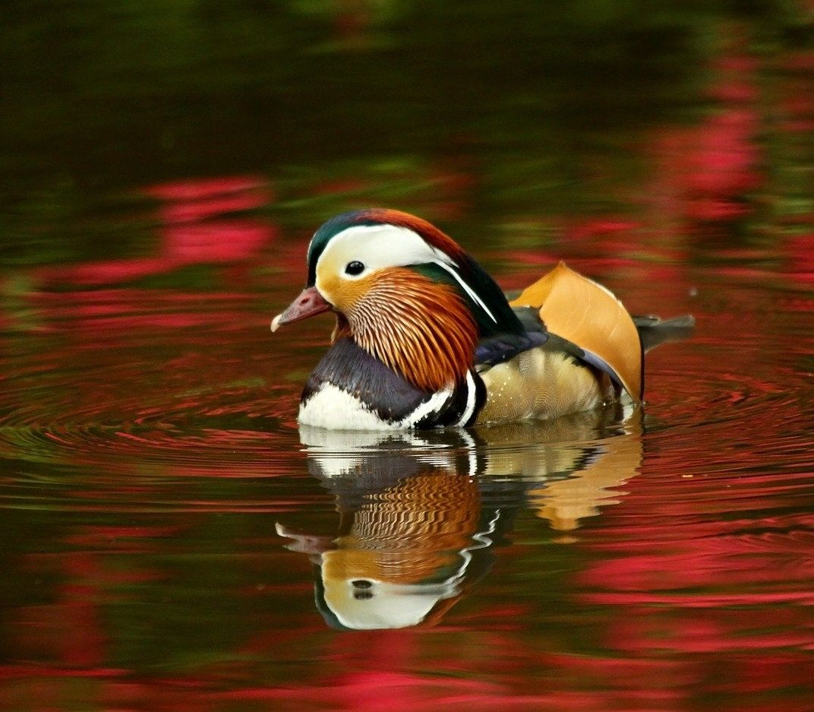
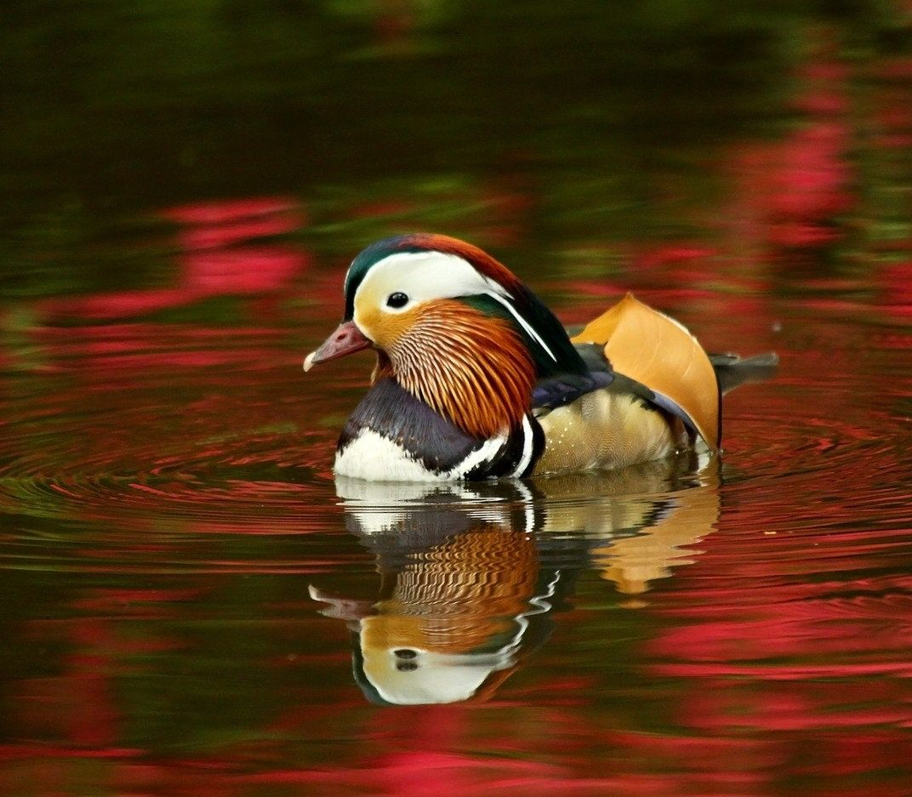
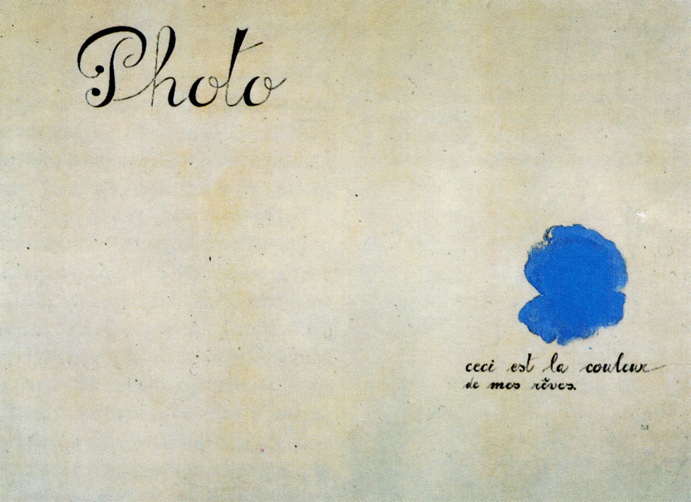
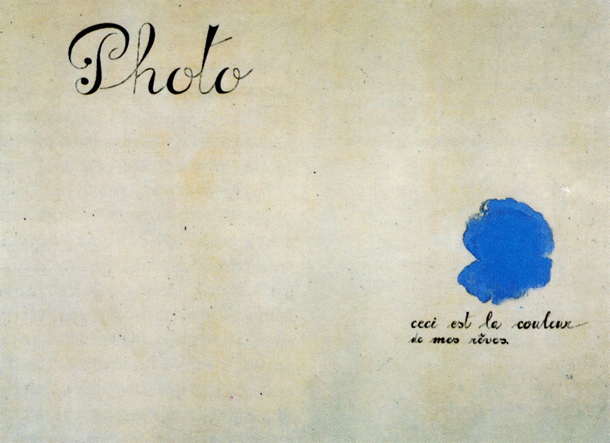

Da Yong's Labs for INST377
Albums
- Clozee - Harmony
- Killswitch Engage - As Daylight Dies
- Lisa Hannigan - At Swim
- K/DA - ALL OUT
- Yuna - Yuna
Image Carousel
 

 

This image carousel features 4 variations of a mochi image that each represent different image file types. These showcase the strengthes of each image type.
The first mochi (leftmost) is a GIF, which is an image file type that supports short animations. Due to their limited number of colors,
the file size is quite small and can be loaded quickly on a webpage.
The second mochi is a JPG, which is a very common image file type that is good for high resolution pictures. However, as the file size reduces, so does the image quality.
There is a visible halo around this mochi because JPGs do not support transparent pixels.
The third mochi is a PNG, which can provide a large variety colors and even transparency. The file can be compressed without losing image quality.
The last mochi is a SVG, which is an image file type that is designed to render well no matter the size. They can work well with many different web standards like CSS, DOM, JS, etc.
These four mochis also happen to be in a band together called "Ana-mochi-sis", and they will be releasing a new album very soon.